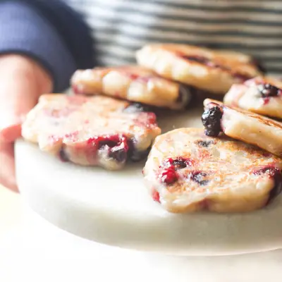

Banana and Blueberry Fritters

Ingredients
- 2 medium small ripe bananas
- ¼ cup - ½ cup all-purpose flour (plain flour) (*buckwheat flour works as a gluten-free alternative. )
- ¼ cup blueberries
- ⅛ tsp cinnamon (,optional)
- 1 tsp coconut oil (,for frying)
Steps
- Mash bananas and then stir in the flour and cinnamon. Half the blueberries and stir through.
- Heat a medium/large non-stick frying pan over medium/high and add the coconut oil.
- Reduce to a medium heat and add tablespoon spoonfuls of the batter into the frying pan and flatten slightly.
- Fry until golden brown on the first side, about 1 to 2 minutes. Flip and fry for a further 1 to 2 minutes. Transfer to a plate and repeat with the remaining batter.
Recipe by Healthy Little Foodies, from Healthy Little Foodies. Saved here for personal use; the original has the full notes, tips and photos. Open original